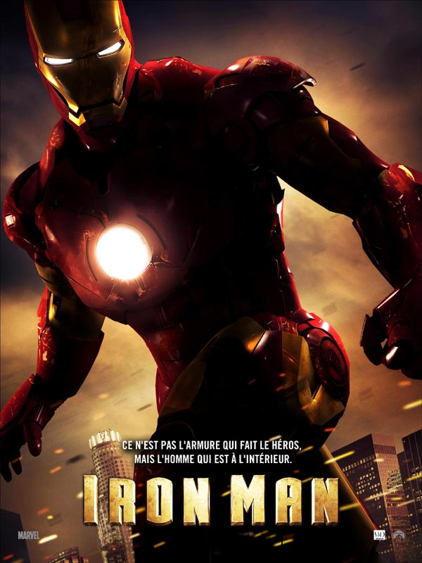

1) Avengers

2) Iron Man
3) Avengers Age Of Ultron
4) Thor
5) Gardian of the Galaxy
6) Doctor Strange
7) Avengers Infinity War
8) Thor : Ragnarok
9) Gardian of the Galaxy Vol.2
10) Black Panther
11) Captain America : Civil War
12) Ant-Man
13) Iron Man 3
14) Avengers Endgame
15) Captain America : First Avenger
16) Spider-Man : Far From Home
17) Ant-Man and the Wasp
18) Spider-Man Homecoming
19) Captain Marvel
20) Captain America : The Winter Soldier
21) Thor: Dark World
22) Iron Man 2
23) The Incredible Hulk
A Venir...